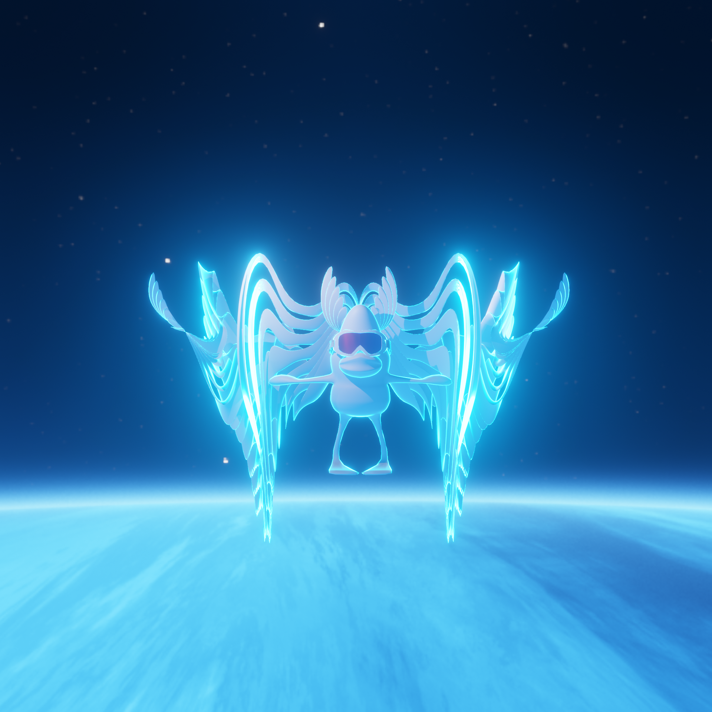

In a clandestine laboratory, tucked away from the public eye, a nameless scientist—endlessly consumed by his work—was on the brink of creating the unimaginable. His days and nights were dedicated to creating a series of unique cyborg ducks: blue, yellow, green, and red, each imbued with a unique set of capabilities. He also designed a wooden mannequin, named VFX, programmed to assist in building these ducks. However, his magnum opus was to be a gold cyborg duck, envisioned as the perfect sentient AI capable of everything. One fateful evening, as the scientist oversaw the assembly of his creations and the nearing completion of the golden duck, tragedy struck. The laboratory was attacked by enigmatic extraterrestrial beings, leading to a massive explosion that destroyed almost everything. The scientist perished in the blast, leaving behind a legacy in the form of San Liuk, VFX, and the nearly completed golden duck.
In the aftermath of the explosion, San Liuk, VFX, and the other surviving ducks found themselves amid the remnants of the lab. With the scientist's blueprints and tools scattered around, VFX felt an overwhelming drive to continue the legacy. Drawing from its programming and the tools around, VFX attempted to craft new ducks. However, without the scientist's magical touch, these new creations were not as perfect. They were later known as the "Maimed Dumb Ducks" - a testament to their imperfections. San Liuk and VFX, in their journey of discovery, soon realized the reason behind the explosion—aliens had targeted the lab. This revelation ignited an unstoppable resolve within San Liuk to find those responsible for the tragedy and to uncover the identity of their "father", the elusive scientist.
Fueled by determination, San Liuk initiated a daring mission—"SLK Space". Alongside VFX and their crew of ingeniously crafted ducks, they embarked on a space expedition. Their journey was riddled with adversities, ranging from combating intergalactic foes to unraveling cosmic mysteries. Despite these challenges, their primary mission remained unaltered: seeking vengeance and understanding their true origins.
The chronicle of San Liuk transcends just the game. It evolves into a multidimensional project where animations, cartoon series, music videos, and more provide fans a deeper dive into the adventures of San Liuk, VFX, and their allies. Each platform delves further into their world's depth, relationships, and challenges.
Thank you for venturing into the world of San Liuk. As the saga unfolds, we invite you to become a part of this cosmic odyssey, championing San Liuk and VFX, and uncovering the vast universe alongside them. Join us on this unforgettable journey! For collaborations, feedback, or to simply share your insights, please contact us. Together, let's etch history!